Manual de Administrador
ParkNow
Guía completa para administradores del sistema: gestión de parqueaderos, espacios, reservas, usuarios, tarifas, reportes y configuración de la plataforma.
¿Qué es el Panel de Administración ParkNow?
El panel de administración de ParkNow es la interfaz centralizada desde la cual los administradores pueden gestionar todos los aspectos operativos del sistema de parqueaderos. Permite supervisar en tiempo real la disponibilidad de espacios, las reservas activas, los usuarios registrados y el desempeño financiero de cada parqueadero.
Administra parqueaderos, espacios, tarifas y configuraciones desde un solo panel.
Gestiona usuarios, roles y permisos del sistema con control granular.
Accede a reportes financieros, mapas de calor y métricas de uso en tiempo real.
Envía y gestiona notificaciones a usuarios del sistema.
Propósito del Manual
Este manual está diseñado para guiar a los administradores del sistema ParkNow en el uso completo del panel de administración, cubriendo desde el acceso inicial hasta la gestión avanzada de reportes y configuraciones del sistema.
Audiencia Objetivo
Beneficios del Panel Administrativo
Administra múltiples parqueaderos desde una sola interfaz unificada.
Visualiza métricas de ocupación, ingresos y demanda al instante.
Define roles y permisos específicos para cada miembro del equipo.
Visualiza zonas de alta demanda para optimizar la distribución de espacios.
Estructura del Manual
Requisitos del Sistema
El panel de administración de ParkNow está disponible como aplicación móvil. Verifica que tu dispositivo cumpla los requisitos para una gestión óptima.
Dispositivos Compatibles
Android
| Versión mínima | Android 9.0 (Pie) o superior |
| RAM | Mínimo 3 GB recomendado |
| Almacenamiento | 150 MB libres |
| Procesador | ARM64 (recomendado para dashboards) |
| Resolución | Mínimo 1920 × 1080 px |
| GPS | Requerido |
Conectividad
Se requiere mínimo 5 Mbps para la carga de dashboards, reportes con gráficas y mapa de calor en tiempo real.
Compatible con 4G, 5G y Wi-FiSe recomienda Wi-Fi empresarial para sesiones prolongadas de administración.
El panel administrativo requiere conexión activa para todas sus operaciones. No hay modo offline disponible para el administrador.
Recomendaciones Adicionales
- Usa un dispositivo con pantalla de al menos 6 pulgadas para mejor visualización de tablas y dashboards.
- Mantén la aplicación siempre actualizada a la última versión disponible.
- Habilita la autenticación de dos factores para cuentas de administrador.
- Usa una conexión segura (VPN) cuando administres el sistema desde redes públicas.
- Configura el bloqueo automático de pantalla en menos de 2 minutos en dispositivos administrativos.
Acceso al Sistema
Cómo iniciar sesión en el panel administrativo y configurar el acceso por primera vez.
Pantalla de Primer Inicio
Al abrir ParkNow como administrador por primera vez, verás la pantalla de bienvenida general. Desde aquí accedes al flujo de inicio de sesión administrativo.
Muestra el logo de ParkNow y el botón para comenzar a usar la plataforma.
Toca "Comenzar" para acceder a la pantalla de inicio de sesión administrativo.

Pantalla de Primer Inicio
Inicio de Sesión Administrativo
Desde la pantalla de inicio toca "Ingresar"
Escribe el correo electrónico y contraseña de tu cuenta de administrador proporcionada por el equipo técnico.
Toca el botón "Iniciar Sesión" También puedes usar "Iniciar Sesión con Google" si tu cuenta está vinculada.
Si las credenciales son correctas, el sistema te redirigirá automáticamente al panel de bienvenida administrativo.

Inicio de Sesión
Panel de Bienvenida Administrativo
Tras iniciar sesión exitosamente, el administrador accede a la pantalla de bienvenida que muestra las opciones principales del sistema:
Acceso rápido al mapa y disponibilidad de parqueaderos.
Visualización de reservas activas en tiempo real.
Resumen del módulo de pagos y transacciones.
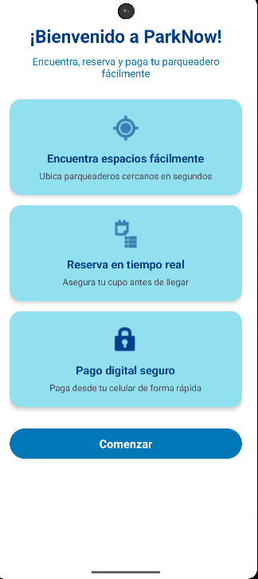
Bienvenida Administrativa
Dashboard Principal
Vista ejecutiva del sistema con métricas clave, accesos rápidos y resumen del estado operativo en tiempo real.
El dashboard es la pantalla principal del panel administrativo. Ofrece una visión consolidada de los indicadores más importantes del sistema.
Métricas Principales
| Indicador | Descripción |
|---|---|
| Parqueadero | Nombre del parqueadero activo seleccionado |
| Espacios totales | Número total de espacios del parqueadero |
| Disponibles | Espacios libres en tiempo real |
| Ocupados | Espacios con reservas activas en este momento |
| Reservaciones / Reportes | Acceso rápido a módulos de gestión |
Acciones Rápidas
Accede directamente al listado de reservas activas y pendientes.
Navega a los reportes operativos y financieros del sistema.
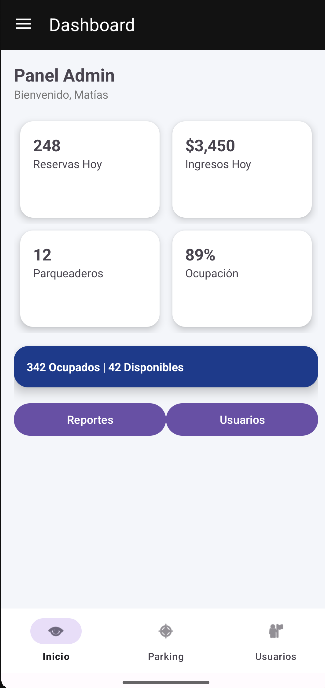
Dashboard Principal
Menú de Navegación Lateral
El menú lateral permite navegar a todos los módulos del panel administrativo. Se accede deslizando desde el borde izquierdo o tocando el ícono ☰.
| Módulo | Función |
|---|---|
| 🏠 Dashboard | Vista general y métricas |
| 🅿️ Parqueaderos | Gestión de parqueaderos |
| 📅 Reservas | Administración de reservas |
| 👥 Usuarios | Gestión de cuentas |
| 📊 Reportes | Analíticas y reportes |
| 🔔 Notificaciones | Centro de notificaciones |
| ⚙️ Configuración | Ajustes del sistema |
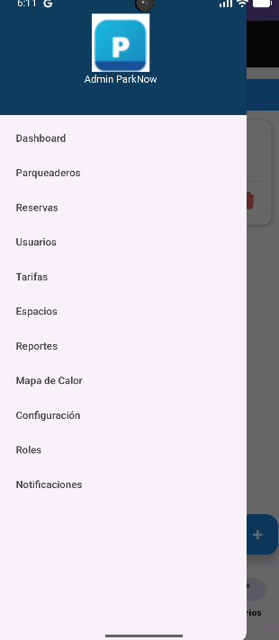
Menú de Navegación Lateral
Gestión de Parqueaderos
Crea, visualiza y administra todos los parqueaderos registrados en la plataforma.
Lista de Parqueaderos
La pantalla de parqueaderos muestra todos los parqueaderos registrados en el sistema con su estado de disponibilidad en tiempo real.
| Campo | Descripción |
|---|---|
| Nombre | Nombre comercial del parqueadero |
| Estado | Disponible / Lleno / Cerrado |
| Espacios | Disponibles vs total de espacios |
| Acciones | Editar, ver detalles o gestionar |
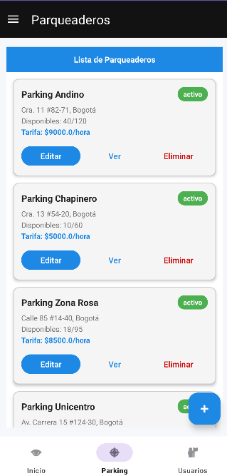
Lista de Parqueaderos
Crear Nuevo Parqueadero
Para registrar un nuevo parqueadero en el sistema, completa el formulario con toda la información requerida.
Toca el botón "+ Nuevo Parqueadero" en la pantalla de parqueaderos.
Completa los campos obligatorios del formulario.
Verifica la información ingresada y presiona "Guardar".
| Campo | Descripción | Tipo |
|---|---|---|
| Nombre | Nombre comercial | Texto -Obligatorio |
| Dirección | Ubicación del parqueadero | Texto -Obligatorio |
| Teléfono | Número de contacto | Numérico -Obligatorio |
| Capacidad total | Total de espacios disponibles | Numérico -Obligatorio |
| Horario | Apertura y cierre del establecimiento | Hora -Obligatorio |
| Servicios | Cubierto, vigilancia, EV, etc. | Selección |
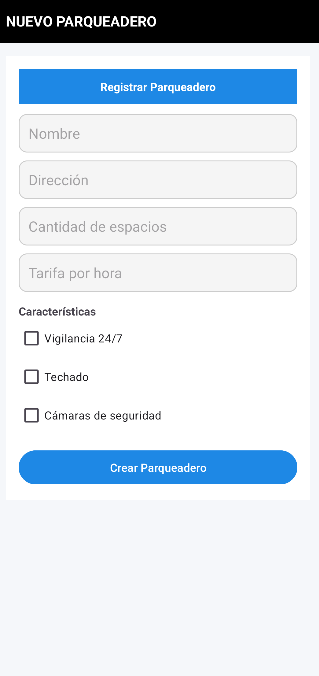
Formulario Crear Parqueadero
Editar Parqueadero
Modifica la información de un parqueadero existente. Todos los campos del formulario de creación son editables.
En la lista de parqueaderos, toca el ícono de edición del parqueadero a modificar.
Actualiza los campos que necesites modificar.
Presiona "Guardar Cambios" para confirmar la actualización.
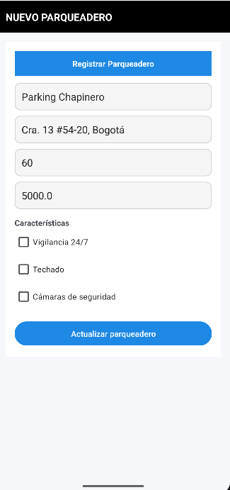
Editar Parqueadero
Editar Tarifas del Parqueadero
Configura las tarifas específicas de cada parqueadero según tipo de vehículo, horario o modalidad de cobro.
Accede a un parqueadero y selecciona la opción "Editar Tarifas"
Define las tarifas por hora, fracción o día según el tipo de vehículo.
Guarda los cambios. Las nuevas tarifas se aplicarán a las próximas reservas.
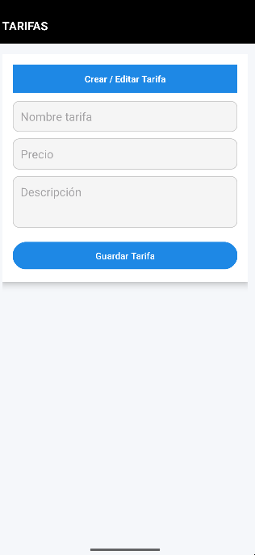
Editar Tarifas
Gestión de Espacios
Administra los espacios individuales de cada parqueadero: disponibilidad, estado y asignación en tiempo real.
La pantalla de espacios muestra la distribución visual de todos los espacios de un parqueadero, con su estado actual representado mediante colores.
Estados de los Espacios
El espacio está libre y puede ser reservado por un usuario.
El espacio tiene una reserva activa en este momento.
El espacio tiene una reserva pendiente de inicio.
El espacio está inhabilitado temporalmente.
Acciones Disponibles
Modifica el nombre, tipo o estado de un espacio específico.
Marca un espacio como disponible, ocupado o fuera de servicio manualmente.
Añade nuevos espacios al parqueadero cuando se amplíe la capacidad física.
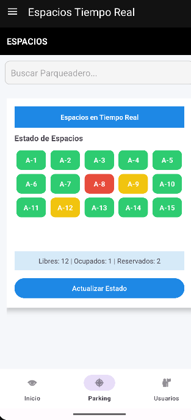
Gestión de Espacios
Gestión de Reservas
Visualiza, crea y administra todas las reservas del sistema con control total sobre su estado y detalles.
Lista de Reservas
La pantalla de reservas presenta el listado completo de todas las reservas del sistema con información resumida de cada una.
| Campo | Descripción |
|---|---|
| Usuario | Nombre del cliente que realizó la reserva |
| Parqueadero | Nombre del parqueadero reservado |
| Espacio | Número o código del espacio asignado |
| Fecha/Hora entrada | Inicio programado de la reserva |
| Estado | Activa / Completada / Cancelada |
| Monto | Valor total cobrado por la reserva |
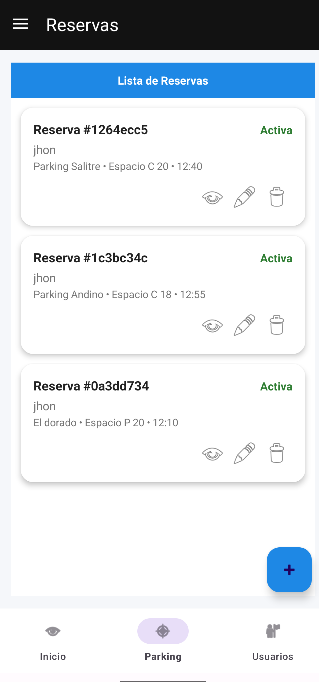
Lista de Reservas
Crear Reserva Manual
El administrador puede crear reservas manualmente para usuarios que lo soliciten por canales externos (teléfono, presencial, etc.).
En la pantalla de reservas, toca "+ Nueva Reserva"
Selecciona el parqueadero y el espacio disponible.
Asigna la reserva a un usuario registrado o crea una reserva anónima.
Define fecha, hora de entrada y duración estimada.
Confirma y presiona "Crear Reserva" El sistema generará automáticamente el código de reserva.
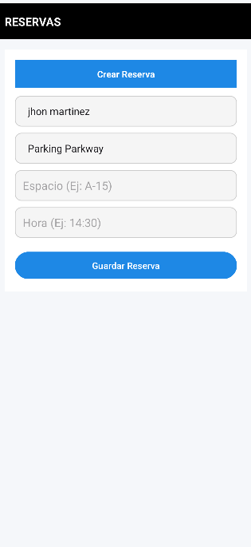
Crear Reserva Manual
Detalle de Reserva
Al seleccionar una reserva de la lista, se despliega el detalle completo con toda la información de la transacción.
| Campo | Descripción |
|---|---|
| Código | Identificador único de la reserva (ej. PKN-8542) |
| Usuario | Datos del cliente |
| Parqueadero | Nombre y dirección del lugar |
| Espacio | Nivel y número de espacio asignado |
| Entrada | Fecha y hora de inicio |
| Duración | Tiempo total de la reserva |
| Total | Monto cobrado |
| Estado de pago | Pagado / Pendiente / Reembolsado |
El administrador puede cancelar y gestionar el reembolso desde esta pantalla.
Ajusta la duración o el espacio asignado si es necesario.
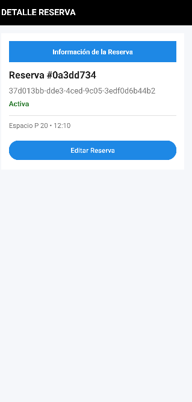
Detalle de Reserva
Usuarios y Roles
Gestiona las cuentas de usuarios del sistema y define los permisos de acceso según el rol de cada persona.
Lista de Usuarios
La pantalla de gestión de usuarios muestra todos los usuarios registrados en el sistema, con su información básica y opciones de administración.
| Campo | Descripción |
|---|---|
| Nombre | Nombre completo del usuario |
| Correo | Dirección de email registrada |
| Rol | Tipo de cuenta (Admin / Operador / Usuario) |
| Estado | Activo / Suspendido / Pendiente |
| Acciones | Editar, suspender o eliminar cuenta |
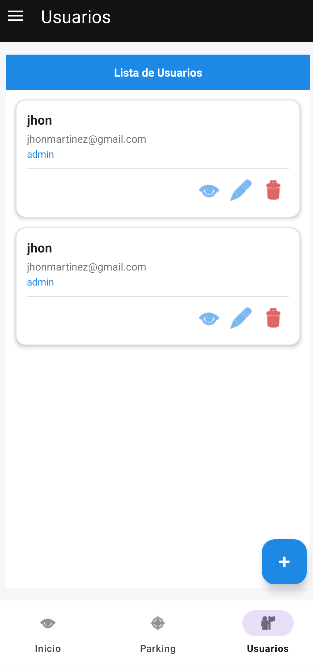
Gestión de Usuarios
Roles y Permisos del Sistema
ParkNow maneja un sistema de roles jerárquico que define qué puede ver y hacer cada tipo de usuario dentro del panel administrativo.
| Rol | Accesos |
|---|---|
| Administrador | Acceso total a todos los módulos. Puede crear y eliminar cuentas, gestionar todos los parqueaderos y ver reportes financieros completos. |
| Operador | Gestión de espacios y reservas de parqueaderos asignados. Sin acceso a configuración ni reportes financieros globales. |
| Usuario | Acceso exclusivo a funciones de usuario final: buscar, reservar y pagar. Sin acceso al panel administrativo. |
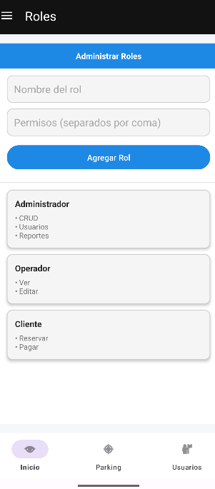
Roles del Sistema
Invitar Nuevo Usuario
El administrador puede invitar a nuevos miembros del equipo al panel administrativo directamente desde la app.
En Gestión de Usuarios, toca el botón "Invitar Sesión"
Ingresa el correo electrónico del nuevo administrador u operador.
Selecciona el rol que tendrá en el sistema.
Presiona "Ingresar" El sistema enviará una invitación al correo indicado.
Invitar / Sesión de Usuario
Reportes y Analíticas
Accede a reportes financieros, operativos y visualizaciones de demanda para tomar decisiones informadas.
Reportes Financieros
El módulo financiero proporciona métricas de ingresos, transacciones y rendimiento económico de los parqueaderos.
| Métrica | Descripción |
|---|---|
| Ingresos totales | Suma de todos los pagos del período seleccionado |
| Transacciones | Número total de reservas pagadas |
| Ticket promedio | Valor promedio por reserva |
| Comparativo | Variación respecto al período anterior |
Selecciona día, semana, mes o rango personalizado para analizar los datos.
Descarga el reporte en formato PDF o Excel para compartir con la dirección.
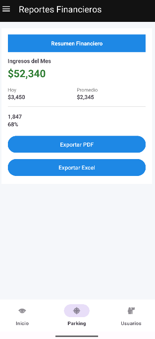
Reporte Financiero
Reportes Operativos
Los reportes operativos muestran el rendimiento y la actividad del sistema mediante gráficas de barras y tablas de resumen.
Visualiza la tendencia de ocupación diaria o semanal mediante barras comparativas.
Porcentaje promedio de espacios utilizados en el período analizado.
Identifica las franjas horarias de mayor demanda para optimizar la operación.
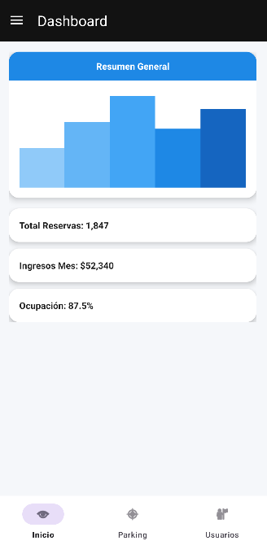
Reportes Operativos
Mapa de Calor
El mapa de calor es una herramienta de análisis visual que muestra las zonas geográficas con mayor concentración de demanda de parqueadero.
Las áreas en rojo indican sectores con mayor concentración de reservas y uso frecuente.
Las áreas en amarillo representan zonas con actividad moderada y potencial de crecimiento.
Áreas con poca actividad. Útil para identificar parqueaderos que necesitan estrategias de promoción.
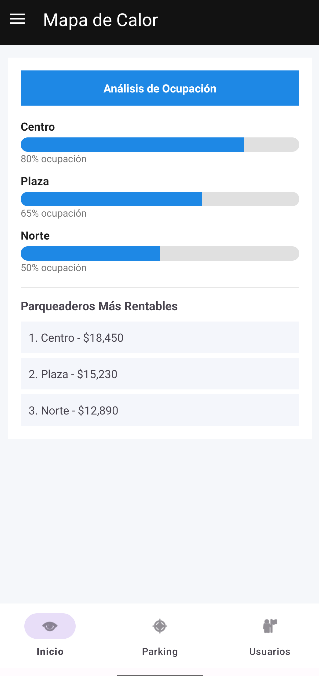
Mapa de Calor
Gestión de Tarifas
Configura y administra las tarifas globales del sistema aplicables a todos los parqueaderos de la plataforma.
El módulo de tarifas permite al administrador configurar los esquemas de cobro globales que se aplicarán en el sistema. Complementa la configuración de tarifas individuales por parqueadero.
Tipos de Tarifa
| Tipo | Descripción | Ejemplo |
|---|---|---|
| Por hora | Cobro estándar por cada hora o fracción | $4.000 / hora |
| Tarifa mínima | Cobro mínimo independiente del tiempo | $2.000 (primera media hora) |
| Tarifa nocturna | Precio especial para horario nocturno | $3.000 / hora (10pm–6am) |
| Tarifa mensualidad | Abono mensual para usuarios frecuentes | $150.000 / mes |
| Tarifa especial | Descuentos para categorías (discapacidad, etc.) | 50% descuento |
Cómo crear una nueva tarifa
Accede a Menú → Tarifas
Toca "+ Nueva Tarifa"
Define el nombre, tipo, valor, vigencia y parqueaderos donde aplica.
Presiona "Guardar Tarifa" para activarla.
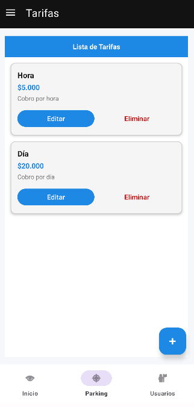
Gestión de Tarifas
Notificaciones
Gestiona el centro de notificaciones del sistema y envía alertas a los usuarios de la plataforma.
El módulo de notificaciones centraliza todas las alertas del sistema y permite al administrador revisar, gestionar y enviar comunicaciones a los usuarios.
Tipos de Notificaciones
Confirmaciones, recordatorios y vencimientos de reservas.
Confirmaciones de transacciones y recibos de pago.
Alertas de mantenimiento, errores y actualizaciones.
Comunicaciones de ofertas y descuentos especiales.
Enviar Notificación Masiva
Accede a Menú → Notificaciones
Toca "Nueva Notificación"
Define el título, mensaje y audiencia destinataria (todos / por rol / usuarios específicos).
Programa el envío o presiona "Enviar Ahora"
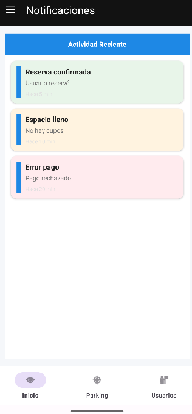
Centro de Notificaciones
Configuración del Sistema
Ajusta los parámetros generales del sistema, preferencias de la plataforma y configuración de integraciones.
El módulo de configuración centraliza todos los parámetros ajustables del sistema ParkNow. Solo el rol de Administrador Principal tiene acceso completo a esta sección.
Opciones de Configuración
| Sección | Qué puedes configurar |
|---|---|
| Perfil de empresa | Datos de la empresa, logo, información de contacto |
| Notificaciones | Tipos de alertas activas y canales de envío |
| Pagos | Métodos de pago habilitados, pasarela y comisiones |
| Usuarios | Políticas de registro y verificación de cuentas |
| Seguridad | Tiempo de sesión, autenticación 2FA, políticas de contraseña |
| Integraciones | APIs externas, mapas y sistemas de terceros |
| Aplicación | Idioma, zona horaria y moneda predeterminada |
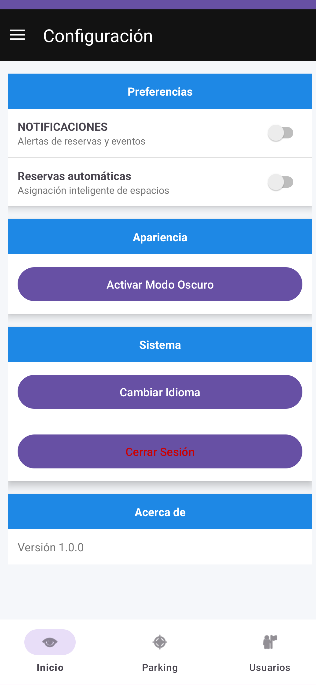
Configuración del Sistema
Resolución de Problemas
Guía de solución para los errores más frecuentes en el panel de administración de ParkNow.
Errores Frecuentes
Causa: Cuenta no activada, credenciales incorrectas o cuenta sin rol de administrador asignado.
- Verifica que estés usando el correo con privilegios de administrador (no el correo de usuario regular).
- Restablece la contraseña desde "¿Olvidaste tu contraseña?".
- Confirma con el administrador principal que tu cuenta tiene el rol correcto asignado.
- Si el problema persiste, contacta a soporte técnico con el correo de tu cuenta.
Causa: Conexión a internet inestable, sesión expirada o error temporal del servidor.
- Verifica tu conexión a Internet y cambia a Wi-Fi si usas datos móviles.
- Cierra y vuelve a abrir la aplicación para renovar la sesión.
- Espera 2–3 minutos y recarga el dashboard.
- Si persiste, borra la caché de la app desde la configuración del dispositivo.
Causa: Campos obligatorios incompletos, dirección no reconocida por el sistema de mapas o permisos insuficientes.
- Verifica que todos los campos marcados con asterisco (*) estén completos.
- Asegúrate de que la dirección ingresada sea válida y reconocible en el mapa.
- Confirma que tu rol tiene permisos para crear/editar parqueaderos.
- Intenta nuevamente con conexión Wi-Fi estable.
Causa: Filtro de fechas incorrecto, reembolsos no reflejados aún o sincronización pendiente con la pasarela de pagos.
- Verifica el rango de fechas del filtro aplicado en el reporte.
- Ten en cuenta que los reembolsos pueden tardar hasta 24 horas en reflejarse.
- Compara con el reporte de la pasarela de pagos para identificar discrepancias.
- Si hay diferencias significativas, repórtalo a soporte técnico con capturas de pantalla.
Causa: Cuenta suspendida por el administrador, contraseña expirada o múltiples intentos fallidos.
- Ve a Gestión de Usuarios y busca la cuenta del usuario.
- Verifica el estado de la cuenta (activa / suspendida / bloqueada).
- Si está suspendida, toca "Activar cuenta".
- Si está bloqueada por intentos fallidos, selecciona "Desbloquear cuenta".
- Comunica al usuario que puede intentar de nuevo o restablecer su contraseña.
Consejos de Seguridad
Prácticas esenciales para proteger el panel administrativo, los datos de los usuarios y la integridad del sistema.
Protección de la Cuenta Administrativa
Contraseña robusta
Las cuentas de administrador deben usar contraseñas de mínimo 12 caracteres con combinación de mayúsculas, minúsculas, números y símbolos especiales.
Autenticación en dos pasos (2FA)
Activa obligatoriamente la verificación en dos pasos para todas las cuentas administrativas. Esto previene accesos no autorizados incluso si la contraseña es comprometida.
Cierre de sesión obligatorio
Siempre cierra sesión al terminar tu turno de trabajo. Configura el cierre automático de sesión después de 15 minutos de inactividad.
Dispositivos autorizados
Usa el panel administrativo únicamente desde dispositivos de uso exclusivo del equipo. Nunca en dispositivos personales compartidos o públicos.
Monitoreo de accesos
Revisa periódicamente el registro de accesos al sistema. Cualquier inicio de sesión sospechoso debe reportarse y la contraseña cambiarse inmediatamente.
Rotación de contraseñas
Actualiza las contraseñas de cuentas administrativas cada 90 días o de forma inmediata cuando un miembro del equipo deja la organización.
Protección de Datos de Usuarios
Asigna a cada miembro del equipo únicamente los permisos estrictamente necesarios para su función. No des acceso de administrador a quien solo necesita consultar reportes.
Evita exportar bases de datos con información personal de usuarios sin una justificación clara y documentada. Los reportes exportados deben almacenarse en ubicaciones seguras.
El sistema registra todas las acciones administrativas. Cualquier modificación de datos de usuarios, eliminación de registros o cambio de configuración queda documentado con fecha, hora y usuario responsable.
El tratamiento de datos personales debe cumplir con la Ley 1581 de 2012 (Habeas Data en Colombia) y las políticas internas de privacidad de ParkNow.
Términos y Condiciones
Condiciones de uso del panel de administración ParkNow para personal autorizado.
1. Acceso Autorizado
El acceso al panel de administración de ParkNow está reservado exclusivamente para personal autorizado por la organización. El uso del panel implica la aceptación de las responsabilidades y obligaciones descritas en este documento. El acceso no autorizado está prohibido y puede resultar en acciones legales.
2. Responsabilidades del Administrador
El administrador del sistema asume plena responsabilidad por:
- La veracidad y exactitud de los datos ingresados al sistema.
- La correcta gestión de los roles y permisos de los usuarios bajo su supervisión.
- La confidencialidad de sus credenciales de acceso y las de los usuarios administrados.
- El cumplimiento de las normativas aplicables en materia de protección de datos personales.
- Reportar de forma inmediata cualquier anomalía, brecha de seguridad o uso indebido detectado.
3. Uso Aceptable del Panel
El panel de administración debe usarse exclusivamente para fines operativos de la plataforma ParkNow. Queda estrictamente prohibido:
- Acceder a datos de usuarios con fines distintos a la operación del servicio.
- Compartir credenciales de administrador con personas no autorizadas.
- Modificar, eliminar o exportar datos de usuarios sin justificación operativa documentada.
- Usar el panel para beneficio personal o de terceros ajenos a la organización.
- Intentar vulnerar las medidas de seguridad o acceder a módulos fuera del rol asignado.
4. Confidencialidad
Toda la información a la que el administrador tenga acceso en el ejercicio de sus funciones, incluyendo datos personales de usuarios, información financiera y configuraciones del sistema, es estrictamente confidencial. Esta obligación de confidencialidad se mantiene incluso después de que el administrador deje de prestar sus servicios.
5. Tratamiento de Datos Personales
El administrador actúa como encargado del tratamiento de datos personales en nombre de ParkNow y deberá:
- Tratar los datos únicamente para las finalidades autorizadas.
- Implementar las medidas técnicas y organizativas necesarias para garantizar la seguridad de los datos.
- No transferir datos a terceros sin autorización expresa y por escrito.
- Notificar a ParkNow cualquier brecha de seguridad que afecte datos personales en el menor tiempo posible.
6. Auditoría y Registro de Actividades
Todas las acciones realizadas en el panel de administración son registradas en el log de auditoría del sistema, incluyendo la identidad del administrador, la acción realizada, la fecha y la hora. Este registro puede ser consultado por ParkNow en cualquier momento con fines de auditoría, investigación de incidentes o cumplimiento regulatorio.
7. Consecuencias del Incumplimiento
El incumplimiento de los presentes términos podrá resultar en la suspensión o revocación inmediata del acceso al panel, acciones disciplinarias internas, responsabilidad civil y/o penal de conformidad con la legislación colombiana aplicable.
8. Modificaciones
ParkNow se reserva el derecho de modificar estos Términos y Condiciones en cualquier momento. Los cambios serán notificados a los administradores mediante correo electrónico y/o notificación en la aplicación. El uso continuado del panel tras la notificación implica aceptación de los nuevos términos.
9. Legislación Aplicable
Estos términos se rigen por la legislación de la República de Colombia, incluyendo la Ley 1581 de 2012 (Protección de Datos Personales) y la Ley 1273 de 2009 (Delitos Informáticos).
Soporte Técnico
Canales de contacto y recursos disponibles para administradores que necesiten asistencia técnica especializada.
Canales de Soporte Administrativo
Soporte Técnico
soporte@parknow.com
Para errores técnicos, bugs y problemas de funcionamiento del sistema. Tiempo de respuesta: 4–8 horas hábiles.
Seguridad
seguridad@parknow.com
Para reportar brechas de seguridad, accesos no autorizados o vulnerabilidades. Atención 24/7 en emergencias.
Administración
admin@parknow.com
Para solicitudes de nuevas cuentas administrativas, cambios de rol y accesos especiales. Respuesta en 24 horas hábiles.
Línea Directa
601-XXX-XXXX
Disponible lunes a viernes 8:00 a.m. – 6:00 p.m. Para urgencias operativas que afecten el servicio.